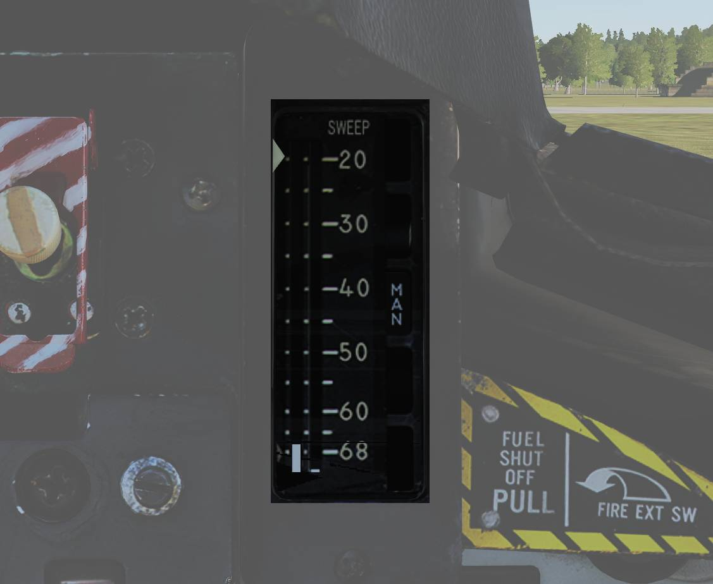
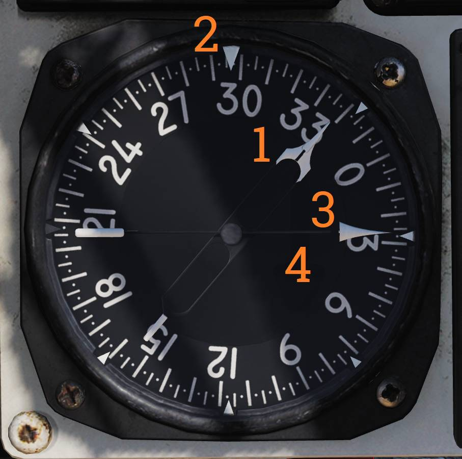
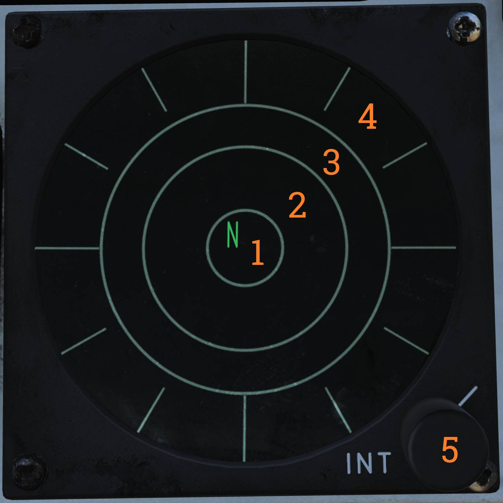

Right Instrument Panel
Wing-Sweep Indicator

Indicator detailing status of the wing-sweep system.
Leftmost indicator pointer shows wing-sweep program position which is also the max forward angle at present airspeed and altitude.
Middle tape shows commanded wing-sweep position.
Rightmost tape shows actual wing-sweep position.
The five indicator windows shows current operating mode.
Right Engine Fuel Shutoff Handle

Emergency fuel shutoff handle for the right engine.
Pulling the handle shuts off fuel flow to the right engine. Pushing the handle in restores fuel flow.
This handle should not be used for normal engine shutdown.
The right engine fire extinguishing button is located behind the handle and is accessible when the handle is pulled outward.
Standby Attitude Indicator

Standalone standby attitude indicator.
An OFF flag is visible on the left side when caged or when unpowered.
The knob below and to the right of the indicator cages/uncages the indicator and allows trim to correct pitch. In pulled out position the indicator is caged. When pushed in uncages the indicator and allows pitch trim by turning the knob.
UHF/VHF Remote Indicators

Remote indicators display frequency or channel information for UHF 1 and V/UHF 2 radios.
UHF 1 Remote Indicator
The UHF 1 remote indicator (
V/UHF 2 Remote Indicator
The V/UHF 2 remote indicator (
The operation of the DIM and BRT knob as well as TEST button are the same for both indicators.
The DIM and BRT knobs control display brightness.
The TEST button initiates a self-test. A correct test result displays 888.888.
Bearing Distance Heading Indicator (BDHI)

Provides azimuth, bearing, and distance information.
No. 2 Bearing Pointer
The No. 2 bearing pointer (
Compass Rose
The compass rose (
No. 1 Bearing Pointer
The No. 1 bearing pointer (
Distance Counter
The distance counter (
ALR-67 Indicator

Displays radar emitters detected by the ALR-67 radar warning receiver.
Threat Display Bands
- Non-lethal band (
2 ) - Displays emitters not considered an immediate threat due to range or lack of weapon capability. - Lethal band (
3 ) - Displays emitters capable of engaging own aircraft but not currently doing so. - Critical band (
4 ) - Displays direct threats to own aircraft. Systems capable of engaging own aircraft and showing current intent of doing so.
System Status Circle
The system status circle (
Area I (upper left quadrant) displays threat prioritization symbols:
- N - Normal.
- I - AI, Airborne interceptors prioritized.
- A - AAA, Anti-air artillery prioritized.
- U - Unknown emitters prioritized.
- F - Friendly emitters displayed in addition to threats.
Area II (upper right quadrant) indicates limited mode status.
- (Blank) - Limited mode not selected.
- L - Limited mode selected. Only the six highest-priority threats are shown.
Area III (lower half) displays system status and offset information:
- (Blank) - Normal operation.
- B - BIT failure.
- T - Thermal overload.
- O - Offset display selected. Threats will be separated to allow readout of overlapping symbols. Bearing accuracy degraded for displaced threats.
Intensity Control Knob
The INT knob (
Canopy Jettison Handle

The canopy jettison handle is used to manually jettison the canopy during emergency egress.